Conservation Enterprises Webinars
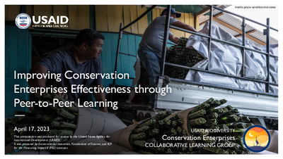
Webinar Slides: Improving Conservation Enterprises Effectiveness through Peer-to-Peer Learning
As part of the USAID Agency Learning and Evidence Month 2023, the Conservation Enterprises Collaborative Learning Group hosted a webinar showcasing its Impact Lab model for encouraging peer-to-peer learning.
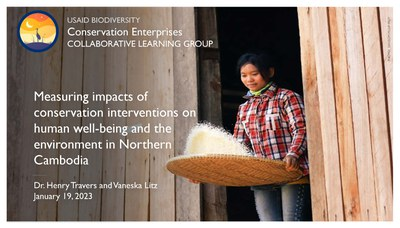
Webinar: Measuring Impacts of Conservation Interventions on Human Well-being and the Environment in Northern Cambodia
The International Initiative for Impact Evaluation (3ie) conducted an impact evaluation to assess the effectiveness of conservation interventions supported by the Wildlife Conservation Society in and around three protected areas in Northern Cambodia in improving household well-being and reducing deforestation from agriculture.
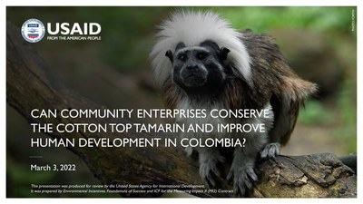
Webinar: Can Enterprises Conserve the Cotton Top Tamarin and Improve Human Development in Colombia?
The cotton-top tamarin (Saguinus oedipus) is a critically endangered primate species found only in the tropical dry forests of northern Colombia.
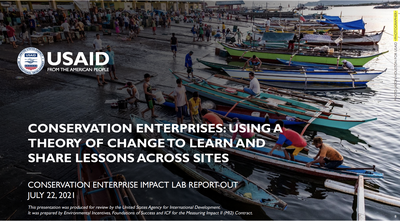
Webinar: Using a Theory of Change to Learn and Share Lessons Across Sites
USAID’s Conservation Enterprises Learning Group facilitates learning by using a generalized theory of change to help teams monitor, evaluate, and share lessons from their conservation enterprise approaches.
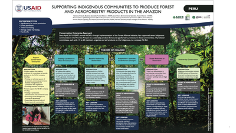
Webinar Slides: Using a Theory of Change to Learn and Share Lessons Across Sites
USAID’s Conservation Enterprises Learning Group facilitates learning by using a generalized theory of change to help teams monitor, evaluate, and share lessons from their conservation enterprise approaches.
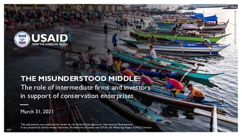
Webinar Slides: The Misunderstood Middle: The Role of Intermediate Firms and Investors in Support of Conservation Enterprises
Findings from USAID's 20-year retrospective of conservation enterprises pointed to the importance of intermediate firms to scale conservation outcomes.
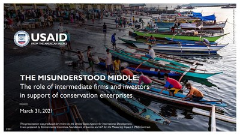
Webinar Recording: The Misunderstood Middle: The Role of Intermediate Firms and Investors in Support of Conservation Enterprises
Findings from USAID's 20-year retrospective of conservation enterprises pointed to the importance of intermediate firms to scale conservation outcomes.
Webinar: Community Forest Management in Peru
More than 400,000 indigenous people live in the Peruvian Amazon, many of whom live in vulnerable conditions due to a combination of extractive industries, ecosystem degradation, and a lack of indigenous-owned businesses.
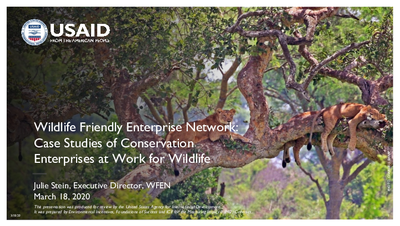
Wildlife Friendly Enterprise Network Webinar Presentation
On March 18, E3/FAB and Measuring Impact II hosted the first joint webinar of the Conservation Enterprise and Combating Wildlife Trafficking Learning Groups with Julie Stein, the Executive Director and Co-Founder of the Wildlife Friendly Enterprise Network.
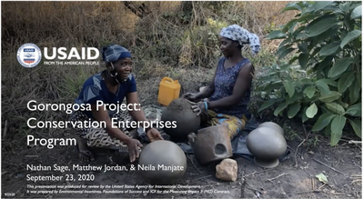
Webinar Recording: Gorongosa Project Conservation Enterprises
Working with approximately 200,000 people living in Mozambique’s Gorongosa National Park buffer zone, the USAID Integrated Gorongosa and Buffer Zone Program seeks to leverage the park as an economic engine to lift every family in the buffer zone out of poverty in the next 30 years.
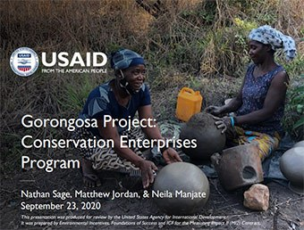
Webinar Presentation: Gorongosa Project Conservation Enterprises
Working with approximately 200,000 people living in Mozambique’s Gorongosa National Park buffer zone, the USAID Integrated Gorongosa and Buffer Zone Program seeks to leverage the park as an economic engine to lift every family in the buffer zone out of poverty in the next 30 years.
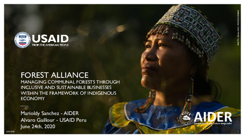
Webinar Presentation: Community Forest Management in Peru
More than 400,000 indigenous people live in the Peruvian Amazon, many of whom live in vulnerable conditions due to a combination of extractive industries, ecosystem degradation, and a lack of indigenous-owned businesses.
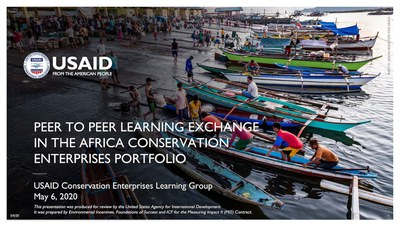
Webinar: Peer-to-Peer Learning Exchange in the Africa Conservation Enterprises Portfolio
In this webinar, the USAID Conservation Enterprises Collaborative Learning Group piloted a Peer Learning approach to facilitate cross-Mission learning.
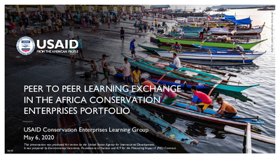
Webinar Presentation: Peer-to-Peer Learning Exchange in the Africa Conservation Enterprises Portfolio
Peer-to-Peer Learning is an approach to sharing experience to facilitate a continuation of institutional knowledge and can be used to orient incoming staff to the history, context, challenges, and opportunities within the portfolio they are taking on.
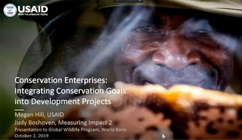
Webinar: Conservation Enterprises: Integrating Conservation Goals into Development Projects
A webinar with the World Bank's Global Wildlife Program demonstrated how conservation enterprise projects can achieve goals if certain elements and indicators are included during project design and measured through implementation.
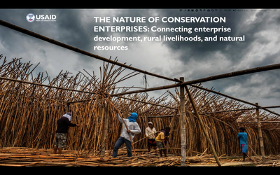
Webinar: The Nature of Conservation Enterprises: a 20 year retrospective evaluation
This webinar is intended for international development staff with an interest in agricultural livelihood development, small enterprise development, or conservation enterprises.
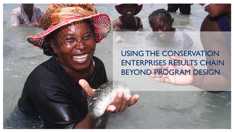
Using the Conservation Enterprise Theory of Change Beyond Program Design
In this webinar, Shawn Peabody (Measuring Impact) presents an approach to integrating monitoring, evaluation, and learning systems for conservation enterprises activities.

Lessons from 20 Years of Conservation Enterprise Support in The Maya Biosphere Reserve
In this webinar from September 14th, 2017, Benjamin Hodgdon and Alejandro Santos from Rainforest Alliance and Ani Zamgochian from USAID/Guatemala talk about their experiences with conservation enterprises in the Maya Biosphere Reserve.
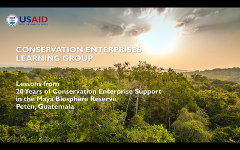
Lessons from 20 Years of Conservation Enterprise Support in The Maya Biosphere Reserve
In this webinar from September 14th, 2017, Benjamin Hodgdon and Alejandro Santos from Rainforest Alliance and Ani Zamgochian from USAID/Guatemala talk about their experiences with conservation enterprises in the Maya Biosphere Reserve.
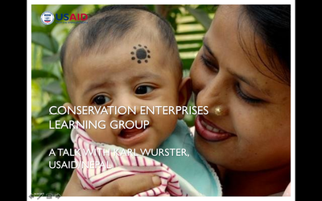
Webinar: Conservation Enterprise Impact Evaluation in Nepal
During this August 10th, 2017 Webinar, Karl Wurster from USAID/Nepal shared his plans for an impact evaluation looking at 10 years of implementation of alternative livelihoods under the Haryo Ban activity.